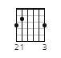
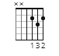
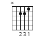
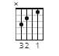

G
D
Am
C
   
Eric Clapton er en britisk musiker og gitarlegende, født 30. mars 1945 i Ripley, Surrey, England. Han er kjent for sitt betydelige bidrag til blues- og rockmusikken. Clapton startet sin karriere på 1960-tallet og har siden vært en dominerende kraft i bransjen. Med ikoniske låter som "Layla" og "Tears in Heaven" har han sementert seg som en av de mest innflytelsesrike gitaristene og låtskriverne gjennom tidene. Eric Clapton har også vært en sentral figur i band som The Yardbirds, Cream og Derek and the Dominos. Hans lidenskap for musikk og teknisk dyktighet har gjort ham til en legende i rockens historie.